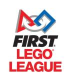
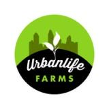

Many companies can demo AI. Few can get it approved, integrated, and running inside a regulated bank or lender. That is my work, whether I'm leading the program or doing the work alongside the team. Most recently SVP of Product & Platform at Kind Lending, where we put 7 AI agents into production, and VP of Product at JPMorgan Chase, where I took an automated decisioning service through risk, compliance, legal, and audit. Right now I'm building BRĒTH, a physical product, with an operational partner through ApexPrime Products.
New technology is easy to demo and hard to put into production at a bank. Between the two sit legacy platforms, vendor systems, data mapping, testing, and the risk, compliance, legal, and audit sign-offs. I've worked in that gap at JPMorgan Chase, Kind Lending, loanDepot, Washington Mutual, and IndyMac, and as a consultant for Microsoft, Disney, Bank of America, and Wells Fargo. The domains have ranged from mortgage and wholesale treasury to Microsoft's delivery methodology and Disney's consumer ticketing portal, and the technology from rules engines to LLM workflows.
I set the roadmap and make the build-vs-buy, vendor, and risk calls with executives, then stay close enough to write the spec and test the release. I'm highly technical, not an engineer: engineering teams build the production systems, and I set direction and validate their output. At JPMorgan I owned the Collateral vertical and kept Appraisal as my own product. At Kind Lending I ran the Executive Steering Committee and prototyped our intake front end in Cursor.
Since Kind Lending's restructuring, I've founded ApexPrime Products and have been building BRĒTH, a physical product venture (market research and custom design through prototype iteration, manufacturing, unit economics, brand, and launch planning, targeted for Q4 2026).
Agent QA and business-owner UAT, human-in-the-loop routing, and production controls. Kind Lending's 7 AI agents and LLM-assisted intake workflow, and JPMorgan's rules-based APDS.
Technology strategy across five loan-ecosystem domains at JPMorgan and a vendor-agnostic architecture direction executives approved. I built the weighted scoring model that took 8,000 requests to a prioritized 380, then took costed build-vs-buy options to executives for decision.
Data mapping, conversion, and integration under regulatory deadline: the 120-branch Empower conversion (9 months vs. 18+) and the $8.8B Wells Fargo/Wachovia treasury integration. Vendor partnerships with ICE, Cotality, Blue Sage, and Docutech, including the Encompass Partner Connect gateway on ICE's cloud-hosted platform.
Conceived APDS, an appraisal-eligibility decisioning service on the Sapiens rules engine with state-aware logic and human-in-the-loop routing for borderline cases. Designed its production controls and carried them through risk, compliance, legal, and audit sign-off. Wrote the PRDs, stories, and API/ETL specifications engineering built against, and hand-tested every stage through UAT and Blue/Green release gates.
Co-led a 20-agent mortgage-operations AI program with the CTO and owned the agent QA and business-owner UAT sign-off that put 7 agents into production, with 2 more in UAT. Redesigned request intake around an LLM-assisted workflow that turns unstructured business requests into Jira epics and stories meeting Definition of Ready: I prototyped the requestor-facing front end in Cursor, and two back-end developers built it to production from my specs.
Led development for a 120-branch LOS conversion to Empower (begun as a consultant), including the wholesale broker channel and about 270 loan products, and designed the system-of-record boarding across pipeline, secondary, servicing, and GL reconciliation, as annual originations grew from $13.2B to $37.9B.
Owned product and technology strategy and delivery for cloud-deployed origination platforms processing $1B+ a month. Ran the Executive Steering Committee, put 7 AI agents and an LLM-assisted intake workflow into production, tripled the technology team, and raised release-timeline adherence to 100%.
Owned collateral technology for the retail first-mortgage channel and led technology strategy across five loan-ecosystem domains. Recommended the vendor-agnostic architecture executives approved, delivered APDS, ran the backlog with ICE and Cotality engineering for the Encompass Partner Connect gateway, and led 15 direct and 50+ dotted-line reports across the U.S., India, and the Philippines.
Owned prioritization, requirements, testing, and delivery for the mello™ consumer, loan-officer, and wholesale-broker portals. Led the Docutech integration behind 2M+ e-signings and drove LOS improvements that doubled distributed-channel volume through the TRID conversion.
Led development for the 120-branch Empower conversion and designed the system-of-record boarding through GL reconciliation, with 100% continuity through cutover.
Consulting Experience
Ran IT program management for the Disney Parks online ticketing portal, delivering consumer-facing releases in true Agile to 10M+ visitors, and for the loanDepot/imortgage legal merge event, which led to a direct hire by loanDepot/imortgage to complete the conversion.
Designed the data methods and algorithms for a Bank of America FHA/HAMP compliance remediation effort, then performed the hands-on analysis and remediation directly.
Wrote the cash-vault integration specs and ran data bridging and conversion for the $8.8B Wells Fargo/Wachovia treasury merger: 78 cash-vault consolidations and 600+ customer conversions, through general-ledger reconciliation.
Rewrote the Microsoft Solutions Framework into the delivery methodology Services Delivery Worldwide adopted, co-developed the Services Estimation Tool, and unified 1,800 legal contracts into 180.
Earlier career: Washington Mutual (VP, Enterprise Risk Management; owned the $18M Enterprise Decision Engine, the bank's first centralized credit-decisioning platform), IndyMac Bank (built and ran a production ETL platform), Aames Home Loan. Full detail in the résumé.
Equities and FX algorithmic trading, crypto, and business ventures like ApexPrime Products LLC.
More to come.

Coaching kids (my own included) to design, build, and program robots solving real-world challenges. Collaboration, innovation, and discovery, with serious STEM learning underneath the fun.
On-site sorting, packing, and event coordination for the county's leading hunger-relief organization. Every shift makes a direct impact on families in need.

Real physical work (shoveling soil, clearing weeds) that funds youth job training, leadership development, and fresh produce for City Heights.
Music-based sing-alongs for memory-care communities, sparking connection for seniors living with Alzheimer's and dementia, and raising funds for research.